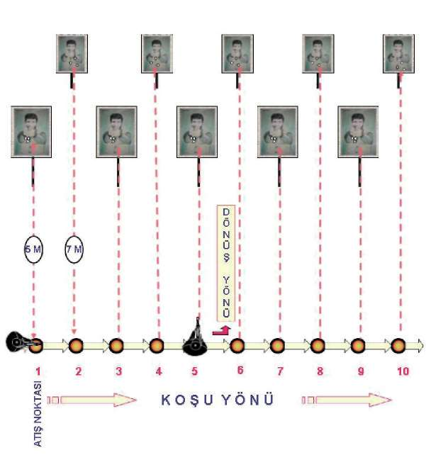
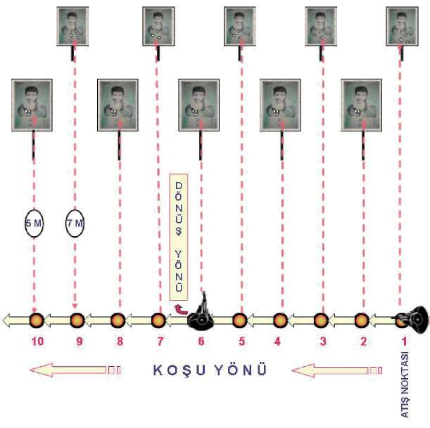
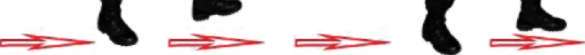
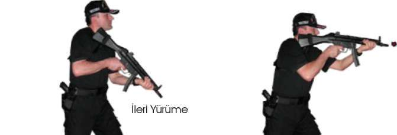

Şekil-14.a) Koşarken Önden Çıkan Hedeflere Doğru Durarak Atış İstasyonu 126


BÖLÜM
İLERİ SEVİYE ATIŞ TEKNİKLERİ
Şekil-14.b) Koşarken Sağdan Çıkan Hedeflere Doğru Durarak Atış İstasyonu Şekil-14.c) Koşarken Soldan Çıkan Hedeflere Doğru Durarak Atış İstasyonu 127

Şekil-14.d) Koşarken Geriden Çıkan Hedeflere Doğru Durarak Atış İstasyonu 2.6. MP5 MAKİNALI TABANCA İLE HAREKET HÂLİNDEYKEN DEĞİŞİK
YÖN VE AÇILARDAN ÇIKAN HEDEFLERE DOĞRU ATIŞ TEKNİKLERİ
Açıklama
Bu tekniğe “MP5 Makinalı Tabanca ile Hareket hâlinde Atış Tekniği” de denilebilir. Tekniğe önce yürüme tekniklerini öğrenerek başlayın.
2.6.1. İleri Doğru Yürüme Tekniği
Yürürken atış yapıldığında MP5 makinalı tabancada sallanma olacaktır. Bu sallanmayı en aza indirebilmek için yürüme ayak topuğundan, ayak ucuna 128



BÖLÜM
İLERİ SEVİYE ATIŞ TEKNİKLERİ
doğru yapılmalıdır. Bacaklar hafif kırık, göğüs ve baş az öne alınmış olmalıdır.
Bu durum ringdeki boksörün duruşuna benzer. (Bakınız Resim-17.a) 2.6.2. İleri Yürürken Öndeki Hedeflere Doğru Hareket Hâlinde Atış Tekniği Önce silahın tipçiğini omuz boşluğunuza yerleştirin. Yere 70 derecelik bir açıyla ileriye doğru yürüme pozisyonuna geçin. Kollar silaha doğru kırık durmalı, verilen her atış komutunda silah hedefe kaldırılarak dipçiğin omuz boşluğundaki kaynağı bozulmadan yüz kaynağını da tamamladıktan sonra atış
yapılmalıdır. (Bakınız Resim-17.a)